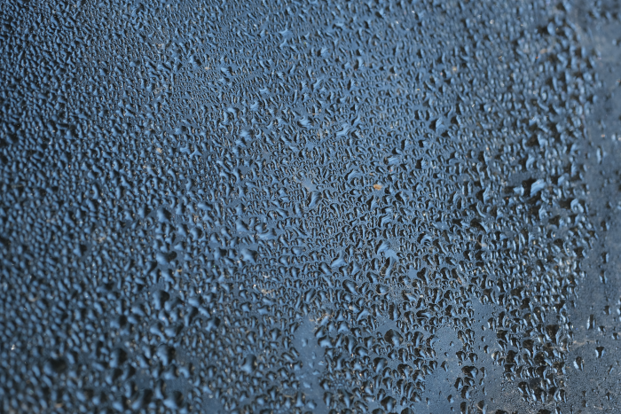

I agree with the message in this image. It really resonates with me.

Someone sent me this file. Looks disgusting.
Sea Facts
The sea is so salty because it’s actually just a large pool of tears.
Anything found in the sea has a high tolerance for sadness. They have grown strong off of the tears of creatures like yourself.
In the deepest depths of the sea, the water has compressed sadness into its highest concentrations. In this area, the chance of contracting depression increases by 61%.
The creatures in the sea like to eat all of our investigational equipment. Our tears after losing our life’s work in the sea, end up as a part of the sea.
Watchers cannot survive the depths of the sea. Their intricate thread detecting insides aren’t built for the pressures found at the bottom of the sea. Probes, however, can withstand it for some time. This is due to their compact and efficient chassis design, which is constructed with the intent to withstand attacks from several different classes of entities within the Terminal array.
With that having been said, around 33% of all probes which perish in the depths of the sea do so because of chassis related failures, resulting in instant compression which ends their sad existence. Another 43% of all probe deaths within the depths are attributed to “underwater entities”. The rest are caused by “unknown” reasons.
Though some sources report that the sea is vast and “bottomless”, it does have a bottom. However, it should be said that the sea itself possesses another sea within itself. As of yet, it has not been determined if this second sea possesses a bottom, or is like the first and has a bottom, but perhaps there is yet another shore on this bottom which may lead to yet another sea within the sea that’s within this first sea. We shall… see.
It has been said that there is a sea upon the moon. Or maybe it was the moon of codes…
The sea is cold.
How to cope with sadness
Remember that it is normal to feel sad.
Your sadness is required to grow the sea, take pride in knowing that your tears will become “home” to a great number of strange creatures.
To stop being sad, gain access to a moonstone. Its holy energies will cleanse you of all negative emotions. All you will know is love for the moonstone. Become one with the moonstone.
Another solid way to destroy sadness is to channel it into a secondary body. Then, once the ritual is complete, fight your sadness in hand-to-hand combat. Fight to the death. No matter who wins, the part of you that can feel sad, won’t feel sad anymore.
An old sage, or maybe it was just an ugly person once said: “Cute things are cute.” Anyway, this probably won’t help you feel better. That person was just a special idiot who could feel better by looking at cute girls doing cute things.
Sometimes, the creatures of the “sea” will listen to your woes. Use this time to put your wretched thoughts onto them, and they will take the burden for you. They love you forever, after all.
It is also possible that you just need to cry more.
Eating or dancing may help reduce sadness, but it’s probably better to eliminate the source of your sadness instead of coping at a baser level. But, if you can’t do that, then it will make you feel better to enjoy some snacks and have a party.
You could also get sad from dancing alone, or eating too much and exploding. In this case, you need to think like a slime.
Someone once said that it might help to write notes to yourself to feel better.
Remember, it could always be worse. It will get worse. There’s nothing you can do to stop it.